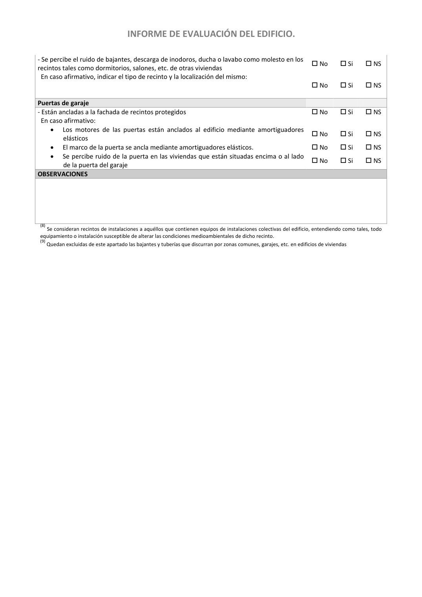

<!doctype html>
<html lang="es"><head><meta charset="utf-8">
<meta name="viewport" content="width=device-width, initial-scale=1">
<title>GUIA · p. 48 — Página 48</title><link rel="stylesheet" href="../estilo.css">
</head><body>
<nav><a href="../index.html">Índice</a> › <a href="../doc/guia-pdf-a5d4ef5252ba-2016-11-01-813669d3066c.html">GUIA</a> › p. 48</nav>

<header class="meta">
<p><strong>GUIA</strong> · Página 48 · versión 2016-11-01</p>
<p>SHA256: <code>813669d3066c0ff79457d57b80b0512a4fbb248bc5db1f7baf473c369a064738</code> · página física 48 de 65 · métodos de encabezado
solo si están cotejados.</p>
<p><a href="../doc/guia-pdf-a5d4ef5252ba-2016-11-01-813669d3066c.html">Documento</a> · <a href="guia-pdf-a5d4ef5252ba-2016-11-01-813669d3066c__p0047.html">← p. 47</a> · <a href="guia-pdf-a5d4ef5252ba-2016-11-01-813669d3066c__p0049.html">p. 49 →</a></p>
<p>Formatos: <a href="../../contenido/docs/GUIA-PDF-a5d4ef5252ba/2016-11-01__813669d3066c/pagina/p0048.md">Markdown</a> · <a href="../../contenido/docs/GUIA-PDF-a5d4ef5252ba/2016-11-01__813669d3066c/bloque/p0048.json">JSON de bloques</a> · <a href="../../contenido/docs/GUIA-PDF-a5d4ef5252ba/2016-11-01__813669d3066c/fuente.pdf#page=48">PDF p. 48</a> · <a href="../../contenido/docs/GUIA-PDF-a5d4ef5252ba/2016-11-01__813669d3066c/figura/p0048.png">imagen PNG</a></p>
</header>
<nav class="paginas"><a href="../doc/guia-pdf-a5d4ef5252ba-2016-11-01-813669d3066c.html">Documento</a> <a href="guia-pdf-a5d4ef5252ba-2016-11-01-813669d3066c__p0047.html">← p. 47</a> <a href="guia-pdf-a5d4ef5252ba-2016-11-01-813669d3066c__p0049.html">p. 49 →</a></nav>
<h2>Encabezado de la página</h2><ul><li>Sin encabezado de fuente cotejada en esta página.</li></ul>

<pre class="literal">INFORME DE EVALUACIÓN DEL EDIFICIO. 
 
- Se percibe el ruido de bajantes, descarga de inodoros, ducha o lavabo como molesto en los 
recintos tales como dormitorios, salones, etc. de otras viviendas 
 No 
 Si 
 NS 
  En caso afirmativo, indicar el tipo de recinto y la localización del mismo: 
 
 
 No 
 Si 
 NS 
Puertas de garaje 
 
 
 
- Están ancladas a la fachada de recintos protegidos 
 No 
 Si 
 NS 
  En caso afirmativo: 
 
 
 
• 
Los motores de las puertas están anclados al edificio mediante amortiguadores 
elásticos 
 No 
 Si 
 NS 
• 
El marco de la puerta se ancla mediante amortiguadores elásticos. 
 No 
 Si 
 NS 
• 
Se percibe ruido de la puerta en las viviendas que están situadas encima o al lado 
de la puerta del garaje 
 No 
 Si 
 NS 
OBSERVACIONES 
 
 
 
 
 
(8) Se consideran recintos de instalaciones a aquéllos que contienen equipos de instalaciones colectivas del edificio, entendiendo como tales, todo 
equipamiento o instalación susceptible de alterar las condiciones medioambientales de dicho recinto. 
(9) Quedan excluidas de este apartado las bajantes y tuberías que discurran por zonas comunes, garajes, etc. en edificios de viviendas 
 
</pre>
<figure><a href="../../contenido/docs/GUIA-PDF-a5d4ef5252ba/2016-11-01__813669d3066c/figura/p0048.png"></a><figcaption>Imagen de la página 48 (PNG ya extraído; prevalece sobre fórmulas).</figcaption></figure>
<h2>Tablas candidatas de esta página</h2><ul><li><a href="../../contenido/docs/GUIA-PDF-a5d4ef5252ba/2016-11-01__813669d3066c/tabla/p0048_t01.json">p0048_t01.json</a> · <a href="../../contenido/docs/GUIA-PDF-a5d4ef5252ba/2016-11-01__813669d3066c/tabla/p0048_t01.csv">.csv</a> (7 × 12; candidata, no reconstruida aquí)</li></ul>
<h2>Referencias, notas y excepciones (página y vecinas)</h2><ul><li>Sin referencias o notas separadas en el JSON.</li></ul>
<h2>Apartados que incluyen esta página</h2><ul><li><a href="../apartado/guia-pdf-a5d4ef5252ba-2016-11-01-813669d3066c__a0033.html">ID a0033 · INFORME DE EVALUACIÓN DEL EDIFICIO.</a></li></ul>

<footer>Generado estáticamente desde JSON normalizado; sin JavaScript ni servicios externos.
El JSON es la fuente; este HTML es caché reproducible.</footer>
</body></html>
